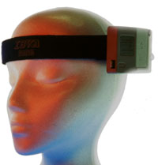
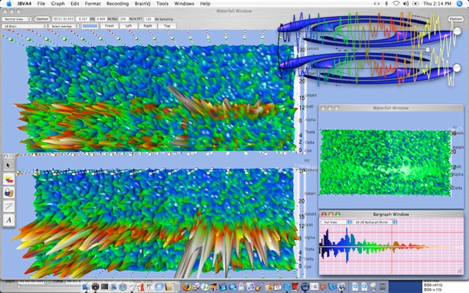
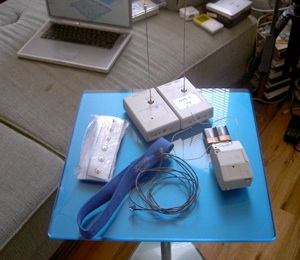

Interactive Brainwave Visual Analyzer (IBVA)
The first commercial wireless brain-computer interface — think with your forehead, control a Mac with your mind

Overview
The Interactive Brainwave Visual Analyzer (IBVA)—also branded as "amuwa"—was a commercially sold, wireless EEG-based brain-computer interface that first shipped in April 1991. Developed by Masahiro Kahata through his company Psychic Lab Inc. in New York, the IBVA was among the earliest consumer BCI products ever brought to market, predating the modern neurotech industry by nearly two decades.
The hardware consisted of a fabric headband with three dry-contact electrodes placed on the forehead (no conductive gel required), connected to a battery-powered amplifier and radio transmitter worn on the body. A receiver box connected to the Macintosh serial port, giving the user roughly 30 feet of wireless mobility. The Mac software performed real-time Fast Fourier Transform (FFT) analysis on two EEG channels—left and right prefrontal cortex—decomposing brainwave activity into Delta, Theta, Alpha, Beta, and Gamma frequency bands. These brainwave metrics could be output as MIDI notes (left/right brain power mapped to note and velocity), serial ASCII data for external device control, QuickTime movie control, or visualizations including 3D waterfall spectral displays. An AppleScript interface and MAX/MSP external made the IBVA accessible to artists and musicians building custom interactive experiences. The system also included a camcorder audio-track recording feature, allowing synchronized brainwave recording alongside video for field research—which Kahata famously used to record EEG inside crop circles in the UK.
Deep dive
Masahiro Kahata (born 1951, Muroran, Hokkaido, Japan) began building brainwave interface systems in 1973, using analog and early digital electronics. By 1978–1980 he was visualizing brainwaves on Apple II and Rockwell computers. In 1984, he publicly demonstrated brainwave-controlled mouse drawing at Sapporo City Education Culture Hall using a Mac 128K, Apple II, and Rockwell computer—nineteen participants drew images using only brainwave switching. He spent 1985–1987 as Chief Researcher at ASCII Laboratories (a division of ASCII Corporation, Japan's leading computer publisher), then incorporated Psychic Lab in Sapporo in 1988. Development of IBVA as a commercial product began with Tokyo-based hardware partner Random Electronics Design. Kahata moved to New York in 1989, working with American Biotech on Mac-based biofeedback systems before incorporating Psychic Lab Inc. in March 1991 and shipping IBVA V1.0.1 the following month.
The sensor headband captured microvolt-level EEG signals from the prefrontal cortex. A low-noise DC-coupled differential amplifier boosted the signal for radio transmission. On the Mac, the IBVA software performed FFT analysis (up to 8192-point, 0.015 Hz resolution) to decompose the continuous EEG into frequency bands. Multiple output modes were available: Brain Peak MIDI mapped left/right brainwave power peaks to MIDI note and velocity; Brain Rhythm MIDI sent continuous rhythmic EEG data; Brain Switches allowed users to set 8 configurable thresholds per channel (left, right, and coherence), enabling up to 128 discrete brain-triggered events. A competitive game mode called BrainFighter pitted two users' brainwaves against each other or against recorded sessions. The system's default bandwidth of 0.16–40 Hz at 120 Hz sampling captured all major EEG bands, while the programmable hardware could run at up to 1920 Hz sampling covering 0–900 Hz.
The IBVA found its most visible use in the art world. Japanese artist Mariko Mori collaborated with Kahata to create waveUFO (2003–2011), an interactive brainwave installation where three participants entered a UFO-shaped pod and their synchronized brainwaves controlled real-time 3D animations. The work toured globally, appearing at the Venice Biennale (2005), Public Art Fund New York, and museums in Brazil, Denmark, and Austria. Other artists included Neam Cathode (Jean Décarie), who created Cyber Mondrian (2001) using brainwave-controlled Mondrian-like visuals and synthesized sound at Montréal's Oboro Gallery; Paras Kaul ("Brain Wave Chick"), who composed brainwave music at George Mason University; and UK artist Luciana Haill, who became the official EU/UK IBVA distributor and used the system in dreamachine EEG installations and augmented reality works. On the commercial side, HBO used the IBVA in 1993 to measure audience engagement with TV programming—finding, as New Scientist reported, that gritty documentaries triggered high brain response while a Michael Jackson concert generated almost none.
The IBVA is extraordinary not just for when it started but for how long it lasted. The product evolved continuously from Mac System 6 through Mac OS 9, Mac OS X, Intel, and Apple Silicon—over thirty years of ongoing development. It added Bluetooth (2006), Quartz Composer visual plugins, GarageBand Audio Unit brainwave filters, an iPhone app (BrainDJVJ, 2009), and eventually open-source extensions including the brain-duino project (2014) and MAX/MSP externals. It won Best of Show at MacWorld New York in 1998 and was covered by Mondo 2000, Electronic Gaming Monthly, Popular Mechanics, New Scientist, and The Guardian. In 2000–2001, Sony America commissioned Psychic Lab to develop a brainwave gaming interface, though the project was cancelled after September 11, 2001.
Team & pioneers
- Masahiro Kahata. Founder of Psychic Lab; developed brainwave interfaces continuously from 1973; former Chief Researcher at ASCII Laboratories Japan; incorporated Psychic Lab Inc. in New York (1991)
- Random Electronics Design. Tokyo-based hardware design partner for the original IBVA hardware (1988–2002)
- Luciana Haill. UK artist and official IBVA EU/UK distributor (2009–present); visiting research fellow at Centre for Computational Neuroscience and Robotics, Sussex University
Media



Sources
- Psychic Lab: Original IBVA system (1991)
- Psychic Lab: Masahiro Kahata profile and development history
- Psychic Lab: IBVA technical specifications
- New Scientist (March 6, 1993): Brain waves show that Michael Jackson is no thriller
- eContact! 14.2: Andrew Brouse on forty years of brainwave music
- BCI Wiki: IBVA Interactive Brainwave Visual Analyser
- IBVA UK / BrainMachine: Luciana Haill distribution and documentation